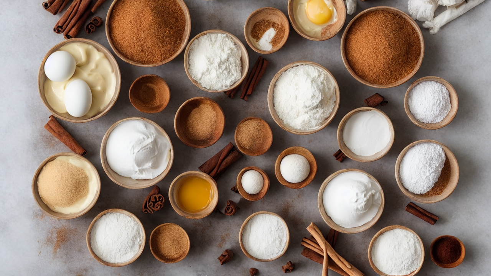
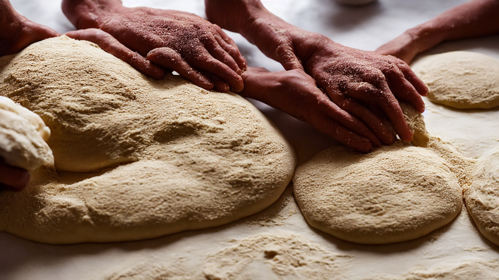
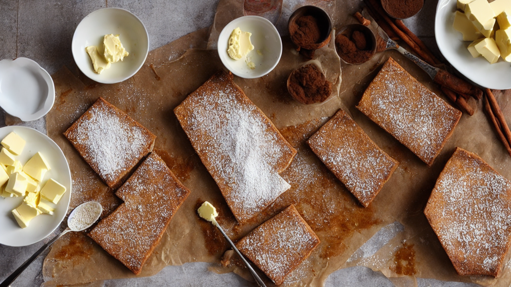
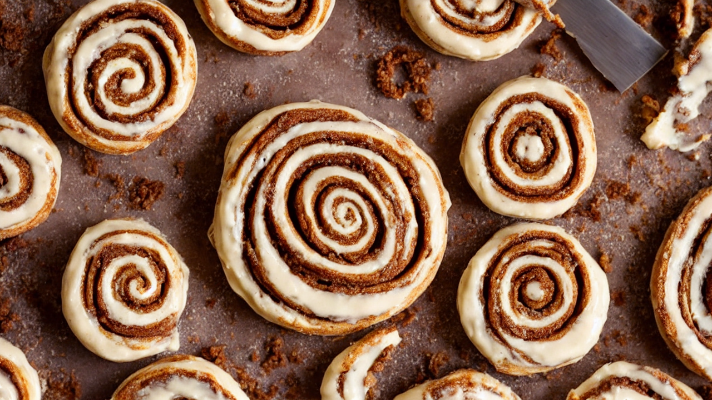
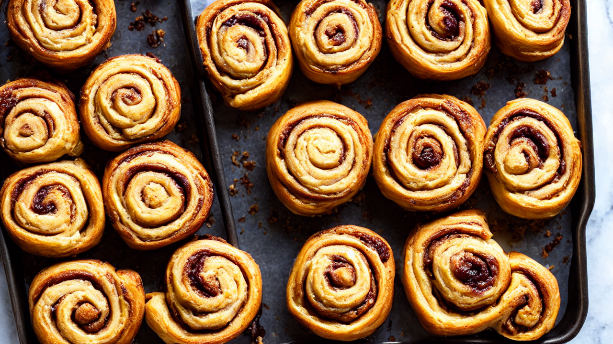
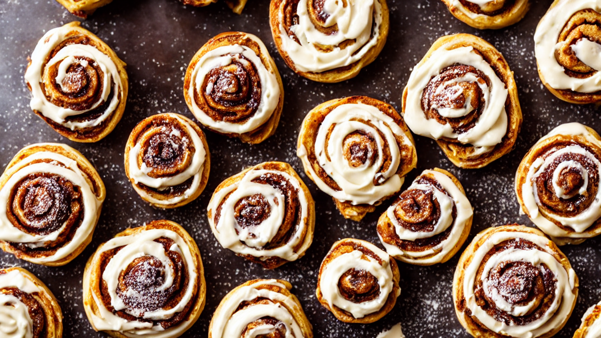

Homemade Cinnamon Rolls | Soft, Fluffy & Irresistibly Delicious!
Craving the ultimate comfort food? Learn how to make incredibly soft and fluffy homemade cinnamon rolls from scratch! This easy-to-follow recipe guarantees perfectly swirled, gooey cinnamon rolls that will become your new weekend baking obsession. #cinnamonrolls #homemaderecipe #baking #comfortfood #sweettooth #breakfast #dessert
Ingredients
- our ingredients! You'll need 1 cup warm milk
- 2 ¼ teaspoons yeast
- ¼ cup sugar
- 1 teaspoon salt
- ¼ cup melted butter
- 1 egg
- 3-3 ½ cups all-purpose flour
- for the filling: ½ cup butter
- ¾ cup brown sugar
- 2 tablespoons cinnamon
Instructions

Get ready to experience cinnamon roll perfection! Today, we're diving into a recipe for unbelievably soft, fluffy, and utterly irresistible homemade cinnamon rolls. Trust me, once you make these, you'll never buy store-bought again!

Let's gather our ingredients! You'll need 1 cup warm milk, 2 ¼ teaspoons yeast, ¼ cup sugar, 1 teaspoon salt, ¼ cup melted butter, 1 egg, 3-3 ½ cups all-purpose flour, and for the filling: ½ cup butter, ¾ cup brown sugar, 2 tablespoons cinnamon.

First, let's activate the yeast! In a large bowl, combine the warm milk, yeast, and 1 tablespoon of sugar. Let it sit for 5-10 minutes until foamy – that means the yeast is alive and ready to go!

Now, add the remaining sugar, salt, melted butter, and egg to the yeast mixture. Gradually add the flour, mixing until a soft dough forms. Knead the dough for 5-7 minutes until it's smooth and elastic.

Place the dough in a greased bowl, turning to coat. Cover and let it rise in a warm place for about 1-1.5 hours, or until doubled in size. This is where the magic happens!

Once risen, gently roll the dough into a large rectangle. Spread with softened butter, then sprinkle with brown sugar and cinnamon. Roll it up tightly like a jelly roll.

Cut the roll into 12 equal pieces. Place them in a greased 9x13 inch baking dish and let them rise again for about 30 minutes. This second rise ensures extra fluffy rolls!
Bake at 350°F (175°C) for 20-25 minutes, or until golden brown and bubbly. While they're baking, let's prepare the icing – a simple mixture of powdered sugar, milk, and a touch of vanilla.
Once out of the oven, let the cinnamon rolls cool slightly before frosting. Drizzle generously with icing and serve immediately. These are best enjoyed warm!
And there you have it – homemade cinnamon rolls that are guaranteed to impress! For extra flavor, try adding a sprinkle of chopped nuts or a swirl of cream cheese to the filling. Don't forget to subscribe for more delicious recipes!
Recommended Kitchen Essentials
Every great recipe starts with great tools. Here are our top picks to make cooking easier and more enjoyable:
Support Quick Bites Kitchen — When you purchase through our links, we may earn a small commission at no extra cost to you. This helps us keep creating free recipes for everyone. Thank you!